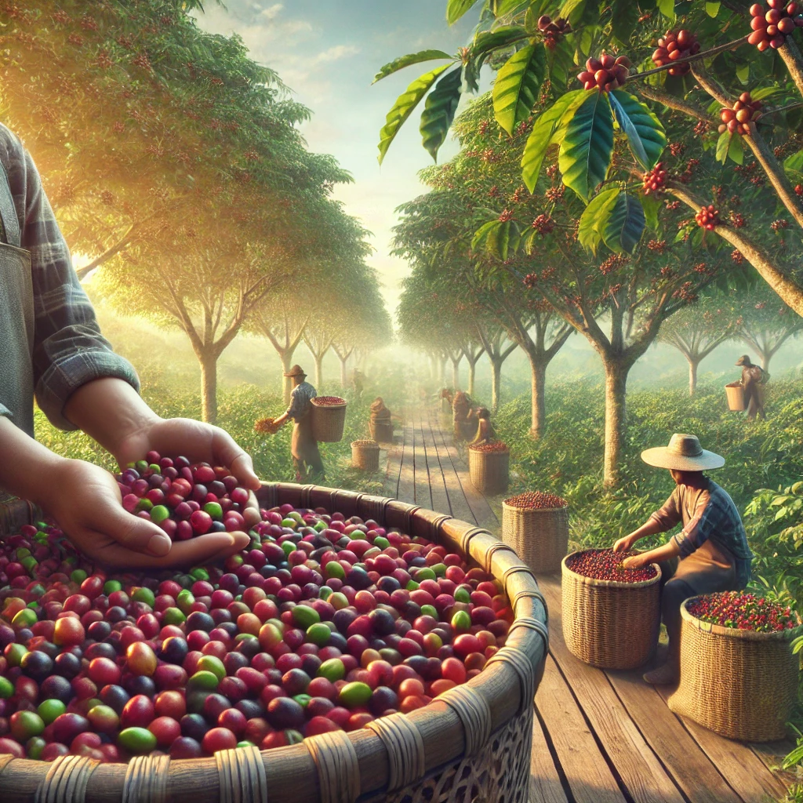

El proceso comienza con el cultivo de las plantas de café en plantaciones bajo el sol brillante. Las cerezas rojas maduras son una señal de que el café está listo para ser cosechado.
Los agricultores recogen las cerezas maduras a mano para asegurar la mejor calidad. Este cuidadoso proceso garantiza que solo las mejores cerezas sean seleccionadas.
Las cerezas de café se lavan, despulpan y se secan al sol antes de ser tostadas. Este proceso es esencial para desarrollar el sabor único del café.
Un barista experto prepara una taza perfecta utilizando una máquina de espresso. Disfruta de una deliciosa taza de café, sabiendo todo el trabajo que hay detrás.